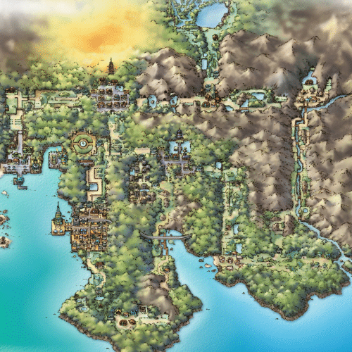

1,500 years prior to Pokémon Gold, Silver, Crystal, HeartGold,
and SoulSilver, the place now known as the Ruins of Alph was built
by an ancient civilization that wished to co-exist with Unown,
which bear great similarity to the alphabet letters. At some point
later, outsiders began to gather near the ruins. As the Unown
were timid creatures, they rejected contact with anyone but the
civilization that protected them. To ensure the Unown's well being,
the Ruins of Alph's inhabitants decided to leave Johto, but not
without devising complicated puzzles so that one day the Unown
could be summoned again. Their quest led the people to a mountain
far to the north, where they met a group of Sinnoh people from
Hisui. Together, the two groups built a temple in honor of Arceus,
which incorporated elements from both the Ruins of Alph and the
Temple of Sinnoh, which became what is now known as the Sinjoh Ruins.
The ritual of honoring Legendary Pokémon through dance circulated
back to Johto, specifically to Ecruteak City.
About 700 years prior, the people of Ecruteak built two nine-tier
towers with the hopes of fostering friendship and hope between
Pokémon and humans: The Brass Tower in the west, which was said
to awaken Pokémon, and the Bell Tower in the east, where Pokémon
were said to rest. Both towers eventually became the roost of flying,
Legendary Pokémon: Lugia and Ho-Oh, respectively. 500 years prior,
the Cianwood City Pharmacy, the world's oldest pharmacy, was built.
400 years prior, Azalea Town was struck by a long-term drought
wave; after bringing the rain back once again by yawning, Slowpoke
gained an honorable position in that town.
150 years prior, a lightning bolt struck the Brass Tower, engulfing
it in flames that raged for three days. A sudden downpour finally
put out the blaze, but it had already burnt to the ground. Three
nameless Pokémon sadly perished in the fire, but Ho-Oh descended
from the sky and resurrected them. The revived Pokémon were made
to embody three powers: the lightning that struck the tower, the
fire that burned the tower, and the rain that put out the fire.
When the Pokémon appeared, they struck terror in those who saw
their rise. The three Pokémon, knowing their own power, fled,
running like the wind off into Johto's grassland. Similarly, both
Lugia and Ho-Oh flew away at the sight of the growing distance
between people and Pokémon; while they never returned to Ecruteak,
they yearned for a person to touch the hearts and souls of Pokémon
once more.